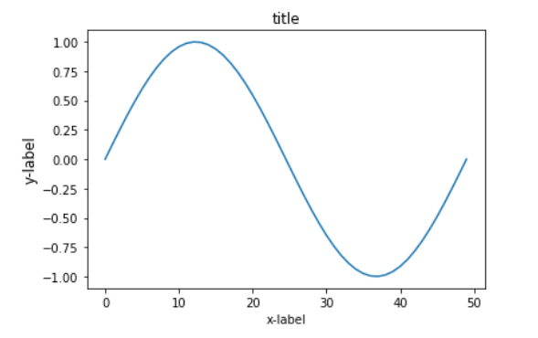
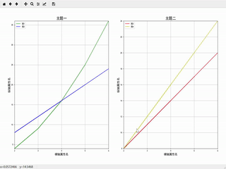
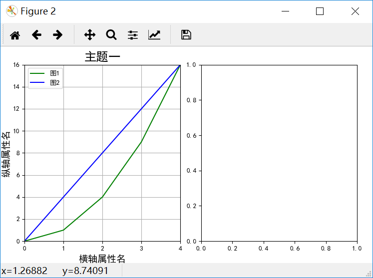

在讲解绘制多个子图之前先简单了解一下使用matplotlib绘制一个图，导入绘图所需库matplotlib并创建一个等间隔的列表x，将[0,2*pi]等分为50等份，绘制函数sin(x)。当没有给定x轴数值时，默认以下标作为x的值，如果x值确定，则绘图时写为 plt.plot(x,y) 。
如若想要绘制一个图时写入标签，则写为 plt.plot(x,y,label="figure1")。
from numpy import *
import matplotlib.pyplot as plt
x = linspace(0, 2 * pi, 50)
plt.plot(sin(x))
plt.xlabel('x-label')
plt.ylabel('y-label', fontsize='large')
plt.title('title')
以下先将整体代码插入，再分布讲解：
import numpy as np
import matplotlib.pyplot as plt
from matplotlib.ticker import MultipleLocator, FormatStrFormatter
def minmax_value(list1):
minvalue=min(list1)
maxvalue=max(list1)
return minvalue,maxvalue
plt.figure(figsize=(16,14),dpi=98)
xmajorLocator = MultipleLocator(1) #将x主刻度标签设置为1的倍数
plt.rcParams['font.sans-serif']=['SimHei']
plt.rcParams['axes.unicode_minus'] = False
p1 = plt.subplot(121)
p2 = plt.subplot(122)
#图中展示点的数量
pointcount=5
x=[i for i in range(20)]
print(x)
y1=[i**2 for i in range(20)]
y2=[i*4 for i in range(20)]
y3=[i*3+2 for i in range(20)]
y4=[i*4 for i in range(20)]
for i in range(len(x)-1):
if i<pointcount:
minx,maxx=minmax_value(x[:pointcount])
minx,maxx=minmax_value(x[:pointcount])
minyA,maxyA=minmax_value(y1[:pointcount])
minyB,maxyB=minmax_value(y2[:pointcount])
maxy1=max(maxyA,maxyB)
miny1=min(minyA,minyB)
p1.axis([minx,maxx,miny1,maxy1])
p1.grid(True)
A,=p1.plot(x[:pointcount],y1[:pointcount],"g-")
B,=p1.plot(x[:pointcount],y2[:pointcount],"b-")
#设置主刻度标签的位置,标签文本的格式
p1.xaxis.set_major_locator(xmajorLocator)
legend=p1.legend(handles=[A,B],labels=["图1","图2"])
minx,maxx=minmax_value(x[:pointcount])
minx,maxx=minmax_value(x[:pointcount])
minyA,maxyA=minmax_value(y3[:pointcount])
minyB,maxyB=minmax_value(y4[:pointcount])
maxy1=max(maxyA,maxyB)
miny1=min(minyA,minyB)
p2.axis([minx,maxx,miny1,maxy1])
p2.grid(True)
A,=p2.plot(x[:pointcount],y3[:pointcount],"r-")
B,=p2.plot(x[:pointcount],y4[:pointcount],"y-")
#设置主刻度标签的位置,标签文本的格式
p2.xaxis.set_major_locator(xmajorLocator)
legend=p2.legend(handles=[A,B],labels=["图3","图4"])
elif i>=pointcount:
minx,maxx=minmax_value(x[i-pointcount:i])
minx,maxx=minmax_value(x[i-pointcount:i])
minyA,maxyA=minmax_value(y1[i-pointcount:i])
minyB,maxyB=minmax_value(y2[i-pointcount:i])
maxy1=max(maxyA,maxyB)
miny1=min(minyA,minyB)
p1.axis([minx,maxx,miny1,maxy1])
p1.grid(True)
A,=p1.plot(x[i-pointcount:i],y1[i-pointcount:i],"g-")
B,=p1.plot(x[i-pointcount:i],y2[i-pointcount:i],"b-")
#设置主刻度标签的位置,标签文本的格式
p1.xaxis.set_major_locator(xmajorLocator)
legend=p1.legend(handles=[A,B],labels=["图1","图2"])
minx,maxx=minmax_value(x[i-pointcount:i])
minx,maxx=minmax_value(x[i-pointcount:i])
minyA,maxyA=minmax_value(y3[i-pointcount:i])
minyB,maxyB=minmax_value(y4[i-pointcount:i])
maxy1=max(maxyA,maxyB)
miny1=min(minyA,minyB)
p2.axis([minx,maxx,miny1,maxy1])
p2.grid(True)
A,=p2.plot(x[i-pointcount:i],y3[i-pointcount:i],"r-")
B,=p2.plot(x[i-pointcount:i],y4[i-pointcount:i],"y-")
#设置主刻度标签的位置,标签文本的格式
p2.xaxis.set_major_locator(xmajorLocator)
legend=p2.legend(handles=[A,B],labels=["图3","图4"])
p1.set_xlabel("横轴属性名一",fontsize=14)
p1.set_ylabel("纵轴属性名一",fontsize=14)
p1.set_title("主题一",fontsize=18)
p2.set_xlabel("横轴属性名二",fontsize=14)
p2.set_ylabel("纵轴属性名二",fontsize=14)
p2.set_title("主题二",fontsize=18)
plt.pause(0.3)
plt.tight_layout(pad=4, w_pad=4.0, h_pad=3.0) 运行结果为:
1、导入库
import numpy as np
import matplotlib.pyplot as plt
from matplotlib.ticker import MultipleLocator, FormatStrFormatter 2、由于绘图过程中多次使用获取最大最小值，将获取最大最小值写入函数，后面直接调用函数即可。
def minmax_value(list1):
minvalue=min(list1)
maxvalue=max(list1)
return minvalue,maxvalue3、（1）创建自定义图像，并设置figured的长和宽以及dpi参数指定绘图对象的分辨率；（2）设置x轴刻度的间隔；（3）对本次绘图中的字体进行设置；（4）在matplotlib下，一个figure对象可以包含多个子图（Axes），使用subplot()快速绘制。
plt.figure(figsize=(16,14),dpi=98)
xmajorLocator = MultipleLocator(1)4、当数据量过多时，对数据一次性展示不能够达到对数据内部信息的解读。本例采用一次展示其中一部分数据，并动态的更新图片，于此同时，动态更新横纵坐标轴的取值范围。下面代码首先设置了每次展示点的数量，并获取了主题一中的所有数据值。根据x取值范围和值域y获取当前绘图过程中的横纵坐标取值范围，最后根据x,y的值进行绘图。
下面将先在一个子图上显示两条静态折现。当使用动态的折线图时，只需动态更新数据和横纵坐标的取值范围。总体代码中已经写出，下面不再赘述。
#图中展示点的数量
pointcount=5
x=[i for i in range(20)]
y1=[i**2 for i in range(20)]
y2=[i*4 for i in range(20)]
minx,maxx=minmax_value(x[:pointcount])
minyA,maxyA=minmax_value(y1[:pointcount])
minyB,maxyB=minmax_value(y2[:pointcount])
maxy1=max(maxyA,maxyB)
miny1=min(minyA,minyB)
p1.axis([minx,maxx,miny1,maxy1])
p1.grid(True)#绘图过程中出现的网格设置
A,=p1.plot(x[:pointcount],y1[:pointcount],"g-")
B,=p1.plot(x[:pointcount],y2[:pointcount],"b-")
#设置主刻度标签的位置,标签文本的格式
p1.xaxis.set_major_locator(xmajorLocator)
legend=p1.legend(handles=[A,B],labels=["图1","图2"]) 结果如下所示：

5、设置边界，不设置边界经常会因为横纵轴的字体太大等其他原因导致横纵轴或者标题只能显示其中一部分。
plt.tight_layout(pad=4, w_pad=4.0, h_pad=3.0) 如有问题，欢迎批评指正，谢谢。